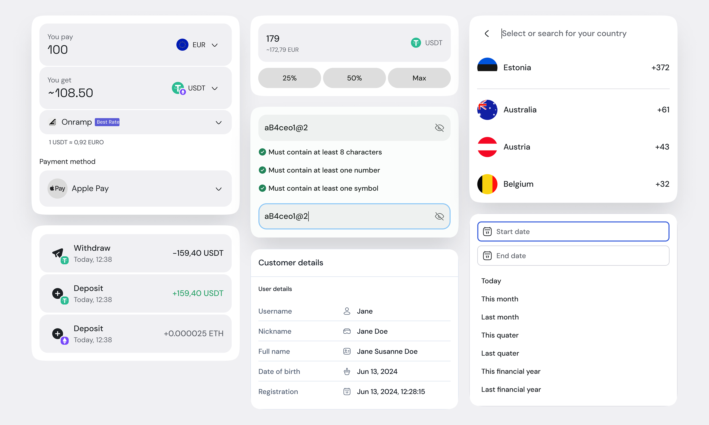
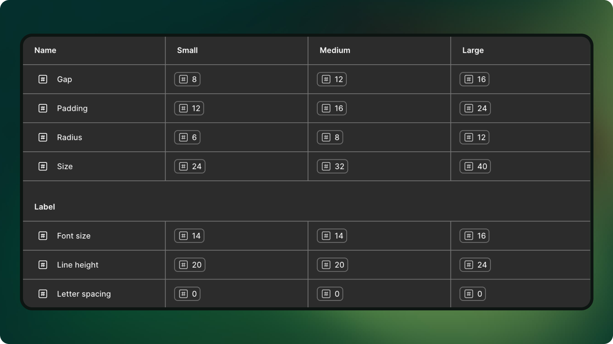
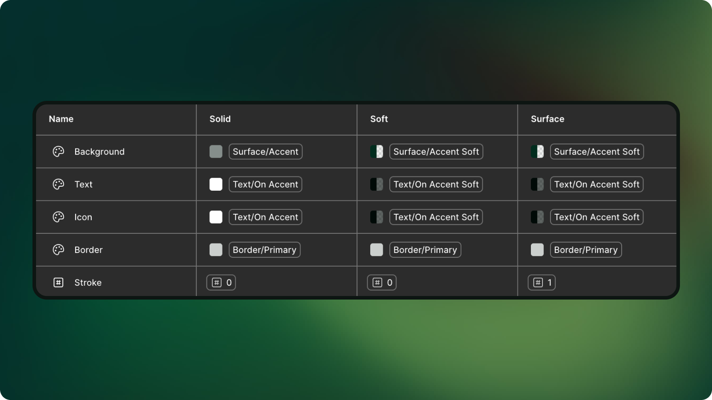
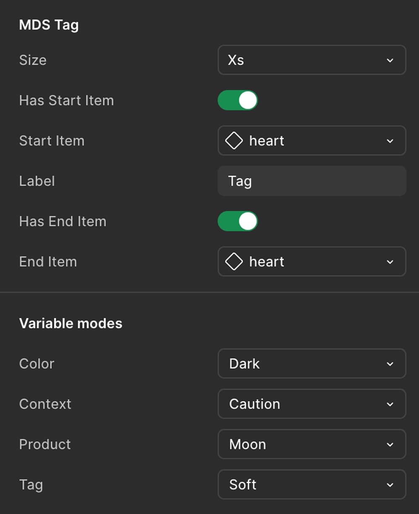
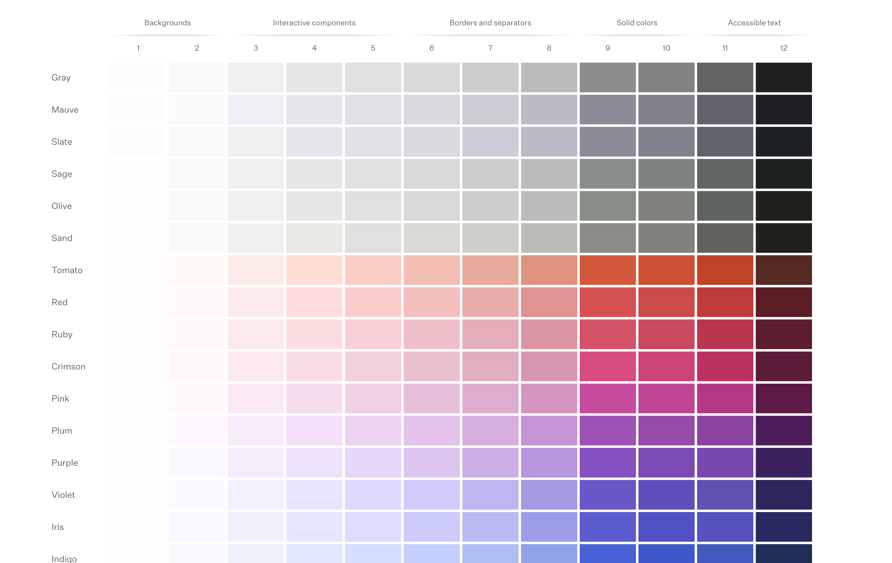

MDS is an open-source design system used across products at Yolo Group. It was created to give design and engineering one shared language and way of working. The scope included design tokens, components, templates, documentation and adoption across teams.
In shaping Moon, we also looked at mature systems like Uber Base, Shopify Polaris, Atlassian Design System and eBay Evo to understand how leading companies structure governance, tokens and documentation. These references helped us benchmark our ambition.
My role was Lead Product Designer from 2024 to 2025.
I'll walk through:

Company had multiple products. Teams were building UI components and patterns independently. Over time, this created inconsistent user experiences, manual work and slower product development process.
So the business goal was simple: increase delivery speed while improving consistency across products. From a system perspective, organization needed one trusted source of truth for design tokens and components.
The challenge was that we weren't starting from scratch. We had:
If the system became too abstract or too complicated, teams would simply continue building their own solutions. Adoption was just as important as architecture.
For file architecture, we compared:
Single large file would be simple at first, but hard to scale. Fully modular libraries would give flexibility, but also risk fragmentation.
We chose a hybrid model for file architecture, satisfying the diverse needs of the products. To validate this structure, we constantly tested those libraries in real scenarios and iterated based on usage.
For tokens, we tested different levels:

Semantic tokens
We decided to use component level tokens to make components easier to control, theme and scale without breaking the whole system:
Instead of every component directly using glocal colors or spacings, each component has its own unique layer, like
This approach gave us better flexibility for theming and brand variations, especially across multiple products.
Our design criteria was very practical and pragmatic:

Component tokens

Tag component, its props and modes.
The biggest signal was adoption:
Overall, the system became a stable platform that allowed products to rely on. Through mentoring and advocacy, it became clear to all teams why design system adaption is highly important.

Radix Colors
One key learning is that strong design systems are built through iteration, not one big launch. We couldn't get everything right the first time.
Adotpion depends a lot on creating a collaborative environment, where communication and understanding product specifics is the key.
If I had the change to continue the work, next steps would include: